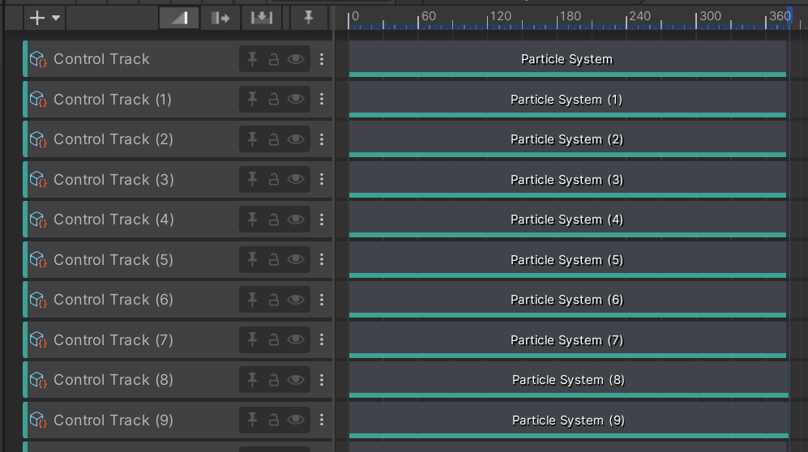
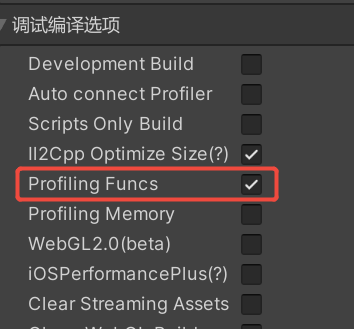
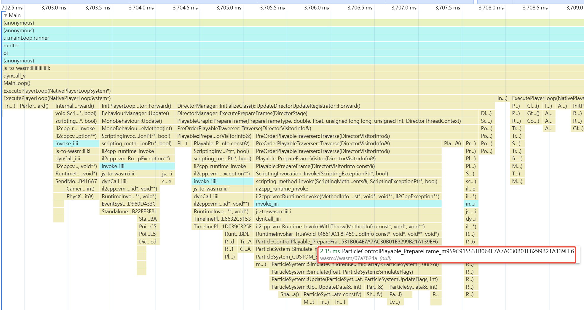
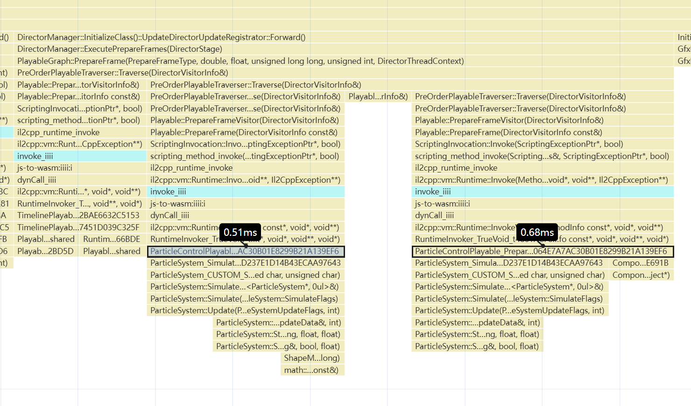
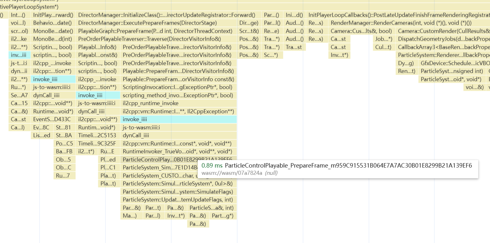

背景
Unity官方提供了Timeline工具，用于进行场景内物件的控制，对标于Unreal Engine的Level Sequence。
但是当Timeline中出现了太多Particle时，则很容易出现Simulate的性能瓶颈。由于微信小游戏不适配Unity原生多线程方案，该问题在微信小游戏平台中更为严重，本文记录了针对该性能热点进行优化的思考和流程。
热点介绍
构建一个Unity工程，在Timeline中添加20个Control Track，将其控制场景中的各类粒子：

使用微信小游戏快适配插件构建小游戏包，记得勾选Profiling Funcs，方便我们查看CPU性能的开销：

在安卓机上进行真机预览，点击Start/Stop CPU Profile进行性能录制，之后便可以在Android/Data/com.tencent.mm/MicroMsg/appbrand/trace目录下找到cpuprofile文件：
该文件可使用Google Chrome打开，我们看到，Particle开销如下：

源码分析
参考官方Timeline插件相关的代码：
1 | public override void PrepareFrame(Playable playable, FrameData data) |
可以看到，主要的开销最终还是落在了particleSystem.Simulate函数中。
优化方案
既然已经定位到了性能热点来自particleSystem.Simulate，因此优化的方式便集中于怎样减少该函数的调用。以下提出若干种优化的方案，希望对于读者有帮助。
根据屏占比降低更新频率
第一个想到的方案自然是根据Particle的屏占比来决定该粒子的更新频率。首先我们需要进行Particle System的屏占比计算。笔者提供了一个基于Bounding Sphere的屏占比计算方法：
1 | private float CalculateScreenCoverageRatio() |
之后，我们只需要PrepareFrame函数中添加针对屏占比降频的操作即可。在此，我们根据屏占比分了三档——每帧更新、隔一帧更新和隔两帧更新：
1 | private int m_FrameCount = 0; |
使用该方法进行性能分析，得到结果如下：

这种做法实现简单，并且在低端机的优化效果也很明显，但是问题也依然明显：对视觉效果影响过大。
举例：如果当前场景整体运算负载较低，足够游戏满帧运行，但是屏占比较低的粒子依然进行了降频，从而影响了视觉效果。
根据帧耗时进行动态频率控制
一种更好的做法则为根据帧耗时进行动态的粒子更新频率控制，也就是说只有在负载比较高的时候才进行频率的控制，参考代码如下：
1 | private const float FrameTimeHigh = 16f; // 60 FPS threshold |
这种方案需要结合帧耗时与屏占比两个指标，从而实现起来较为复杂，并且效果也没有那么直观，性能优化结果如下：

Simulation Budget系统
有一种最为理想的做法则是Simulation Budget系统，该系统参考自Unreal Engine的Animation Budget系统。
简单来说，该系统针对某个模块在某一帧分配了一个相对固定的开销预算（该预算值可以针对不同档位的机器进行配置），并且维护了每个粒子的动态优先级，该优先级计算方案如下：
- 如果屏占比越高，则优先级越高；
- 如果该粒子上一帧没有进行Simulate操作，则本帧该粒子的优先级变高；
使用这种方案有几种好处：
- 管理成本较低，针对不同档位的机型只需要配置开销的预算即可。
- 兼顾表现与性能，在负载较低时能确保表现，在负载较高时能减少卡顿。
- 开销曲线较为平稳。
该方案的实现需要通过Stopwatch获取到每个粒子的Simulate开销，从而判断剩余的性能开销预算是否足够支撑接下来的粒子模拟。
但是由于微信小游戏环境中，高精度时间只能在安卓和iOS普通模式下起效，因此通常的particleSystem.Simulate方法的执行时间都会被判定为0ms，因此该方案理论上只能在安卓平台上起效。